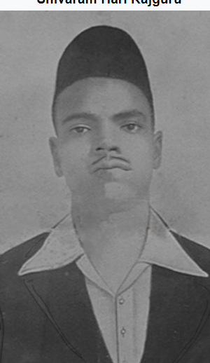

Shivaram Hari Rajguru(24 August 1908 – 23 March 1931)[1][2] was an Indian revolutionary from Maharashtra, known mainly for his involvement in the assassination of a British Raj police officer. He also fought for the independence of India and On 23 March 1931 he was hanged by the British government along with Bhagat Singh and Sukhdev Thapar.
Shivaram Rajaguru

Born
24 August 1908
Khed, Bombay Presidency, British India (present-day Maharashtra, India)
Died
23 March 1931 (aged 22)
Lahore, Punjab, British India (present-day Punjab, Pakistan)
Occupation
Indian freedom fighter
Organisation
HSRA
Movement
Indian Independance Movement
Contents[hide]
Early life
Revolutionary activities
Executions
Reactions to the Executions
Legacy and Memorials
National matrys Memorial
RajaguruNagar
Rajguru Wada
College
See also
References
Further Reading
Early Life [edit]
Rajguru was born on 24 August 1908 at Khed to Parvati Devi and Harinarain Rajguru in a Marathi Deshashtha Brahmin family.[3] Khed was located at the bank of river Bheema near Pune (present-day Pune). His father died when he was only six years old and the responsibility of family fell on his elder brother Dinkar. He received primary education at Khed and later studied in New English High School in Poona.[1]
Revolutionary Activities [edit]
He was a member of the Hindustan Socialist Republican Association, who wanted India to be free from British rule by any means necessary.[2]
Rajguru became a colleague of Bhagat Singh and Sukhdev, and took part in the assassination of a British police officer, J. P. Saunders, at Lahore on 17 December 1928. Their actions were to avenge the death of Lala Lajpat Rai who had died a fortnight after being hit by police while on a march protesting the Simon Commission.[2] Rai's death resulted from the police action.[4][5]
The three men and 21 other co-conspirators were tried under the provisions of a regulation that was introduced in 1929 specifically for that purpose.[6] All three were convicted of the charges.